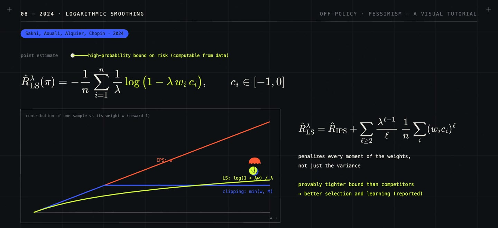

/ 8:14 VIDEO · 2 MIN READ
Pessimism pays off:
off-policy learning, from recommendation to LLM reasoning.
Learning from data that another policy collected is an old problem. In survey sampling, Horvitz and Thompson (1952) corrected for unequal sampling by weighting each observation by the inverse of its probability of being sampled. Bottou et al. (2013) used the same idea to improve ad placement from logs, and Swaminathan and Joachims (2015) turned it into a principle for learning from logged feedback. In offline reinforcement learning, Jin, Yang and Wang (2021) showed that pessimism, trusting only what the data covers, is what makes learning from a fixed dataset provably efficient.
The problem now matters for language models too. In large-scale RL training, completions are often sampled by an older copy of the model or by a separate inference engine while the trainer has moved on. The data comes from a policy \(\mu\), and we want to improve a different policy \(\pi_\theta\), exactly as with recommendation logs. This article follows one line of work by my colleagues and me, from recommendation in 2020 to LLM reasoning in 2026.
The textbook correction is inverse propensity scoring (IPS): weight each logged reward \(r_i\) by how much more likely the new policy is to take the logged action \(a_i\) in context \(x_i\), \[\hat V_{\text{IPS}}(\pi) = \frac{1}{n} \sum_{i=1}^{n} \frac{\pi(a_i \mid x_i)}{\mu(a_i \mid x_i)}\, r_i.\] It is unbiased, but when \(\mu\) rarely chose an action that \(\pi\) favours, one sample gets an enormous weight and dominates the estimate, and an optimizer chases exactly those lucky samples. For a language model the weight is a product over thousands of tokens, which is worse. The pessimistic alternative is to optimize a value the data supports with high probability. In our work the tool that keeps doing this is the logarithm. Logarithmic smoothing (2024) takes each weight \(w_i = \pi(a_i \mid x_i) / \mu(a_i \mid x_i)\) and cost \(c_i \in [-1, 0]\), and estimates the risk as \[\hat R^\lambda_{\text{LS}}(\pi) = -\frac{1}{n} \sum_{i=1}^{n} \frac{1}{\lambda} \log\big(1 - \lambda\, w_i c_i\big),\] which leaves small weights almost unchanged and compresses large ones.

Each step of this work used the logarithm. In 2020, log-IPS reweighted the log-probability instead of the probability, which makes the objective convex. In 2024, logarithmic smoothing gave a high-probability bound tighter than its competitors, which turned into better policy selection. Brought back to language models, dropping the weight entirely leaves a weighted log-likelihood, \(\mathbb{E}_{y \sim \mu}[\hat A \log \pi_\theta(y \mid x)]\) with \(\hat A\) the advantage. With non-negative weights \(g\) its solution is \(\pi^* \propto \mu \cdot g\), so it only moves probability where the data already has some. RoiRL (2025) used this for reasoning without labels, rewarding answers by majority vote, and trained up to 2.5× faster than test-time RL (TTRL). In 2026 we showed that weight-free objectives of this family have a target tempered by the Lambert W function, \[\pi^*(y \mid x) = \frac{\pi_{\text{old}}(y \mid x)}{\tau}\, W_0\big(\tau\, e^{A(x, y)/\beta}\big),\] with \(\beta\) the regularization strength and \(\tau\) a normalizing constant. \(W_0\) grows roughly like a logarithm, so high advantages are tempered instead of amplified exponentially. That explains why recent methods such as OAPL stay stable, and it motivates shifting the advantage to \(\hat A_i = r_i - \bar r + \beta\).
Pessimism probably costs some optimism. Weight-free objectives never move far from the data, and negative advantages can still push log-probabilities towards \(-\infty\). The thread from 2020 to 2026 is my reading of the work.